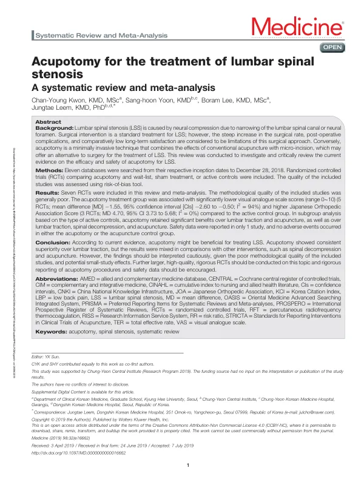

Acupotomy for the treatment of lumbar spinal stenosis
Kwon CY, Yoon Sh, Lee B, Leem J
Medicine 98(32):e16662

첫 장 · 오픈액세스First page · open access
논문 소개Summary
요추 척추관 협착증은 척추관이나 신경공이 좁아져 신경이 눌리는 질환입니다. 수술이 표준 치료이지만 수술률이 가파르게 늘고 있고 수술 후 합병증과 상대적으로 낮은 장기 만족도가 한계로 지적됩니다. 도침은 침에 미세 절개를 더한 최소침습 시술로, 수술의 대안이 될 수 있는지가 관심사였습니다. 이 고찰은 그 물음에 지금까지의 근거로 답해 본 것이고, 같은 연구팀이 미리 등록해 발표한 프로토콜을 따라 수행한 결과 논문입니다.
열한 개 데이터베이스를 각각의 개설 시점부터 2018년 12월 28일까지 검색해 도침 무작위 대조시험을 모았습니다. 중복을 뺀 383편에서 39편의 원문을 확인해 7편 429명을 남겼습니다. 일곱 편 모두 2009년부터 2017년 사이 중국에서 나온 연구였고, 표본은 26명에서 80명, 도침은 1회에서 8회 시행되었습니다.
통증에서는 도침이 대조군보다 나았습니다. 다섯 편을 합친 VAS 평균차는 -1.55, 95퍼센트 신뢰구간은 -2.60에서 -0.50이고 이질성은 94퍼센트로 컸습니다. 대조군 종류로 나누면 요추 견인 대비 -1.33, 침 대비 -1.57에서만 유의했고 척추감압술이나 고주파 열응고술과는 차이가 없었습니다. 일본정형외과학회 점수는 세 편을 합쳐 평균차 4.70, 이질성 0퍼센트로 세 하위군 모두에서 도침이 나았습니다. 총유효율은 위험비 1.19였으나 견인과 감압술 대비에서만 유의했습니다.
숫자보다 눈여겨볼 것은 그 숫자를 떠받치는 자료입니다. 대조군별 비교가 대개 소규모 단일 시험 하나에 기대고 있어 소규모 연구 효과를 배제할 수 없고, 방법론적 질이 전반적으로 낮아 후속 연구에서 결과가 크게 바뀔 수 있습니다. 일곱 편뿐이라 출판 비뚤림을 평가할 수 없었고 전부 중국 연구여서 그 가능성도 무시하기 어렵습니다. 안전성 자료를 보고한 연구는 단 하나였고 이상반응은 없었습니다.
시술 보고의 부실도 이 고찰이 짚은 문제입니다. 자입 부위는 대개 추궁간 공간과 요추 신경근, 황색인대였고 유침을 한 연구는 없었습니다. 그러나 사용한 침 개수를 밝힌 연구는 한 편뿐이었고 시술자의 자격이나 경험을 적은 연구는 하나도 없었습니다. 도침은 일반 침보다 침습적이라 시술자의 숙련도가 결과를 가르는데 그 정보가 통째로 비어 있습니다. 저자들은 STRICTA 지침에 맞추어 시술과 안전성 자료를 보고할 것, 그리고 건강보험 청구자료로 도침 환자의 수술률이 달라지는지 확인할 것을 제안합니다.
Lumbar spinal stenosis arises when the spinal canal or neural foramen narrows and compresses the nerve. Surgery is the standard treatment, but its steeply rising rate, post-operative complications and comparatively low long-term satisfaction are recognised limitations. Acupotomy — a minimally invasive technique combining the effects of conventional acupuncture with micro-incision — has been proposed as an alternative. This review answers that question against the evidence available, and is the results paper of a protocol the same team had registered and published in advance.
Eleven databases were searched from inception to 28 December 2018 for randomised controlled trials comparing acupotomy with wait-list, sham or active controls. Of 383 records after de-duplication, 39 full texts were assessed and 7 trials with 429 participants were included. All seven were conducted in China between 2009 and 2017: five journal articles, one dissertation, one conference paper. Sample sizes ranged from 26 to 80 with a median of 60, and acupotomy was performed one to eight times, median two.
On pain, acupotomy outperformed the controls. Pooling five trials gave a mean difference on the visual analogue scale of -1.55 (95% CI -2.60 to -0.50) with heterogeneity of 94 percent. In subgroup analysis the benefit held only against lumbar traction (-1.33) and acupuncture (-1.57), with no difference against spinal decompression or percutaneous radiofrequency thermocoagulation. The Japanese Orthopedic Association score, pooled across three trials, gave a mean difference of 4.70 (95% CI 3.73 to 5.68) with zero heterogeneity, favouring acupotomy in all three subgroups. Total effective rate across seven trials gave a risk ratio of 1.19, significant only against lumbar traction and spinal decompression.
What matters more than the estimates is what holds them up. Each comparison against a given control rested mostly on a single small trial, which leaves small-study effects impossible to rule out, and the methodological quality of the included studies was generally poor, so subsequent trials could change these results substantially. With only seven studies, publication bias could not be assessed by funnel plot, and since all were conducted in China the possibility is not negligible. Safety data were reported by just one of the seven; in that trial no adverse events occurred.
The poverty of procedural reporting is the review's other finding. Insertion sites were mostly the interlaminar space, the lumbar nerve root and the ligamentum flavum, depth was described at the level of the nerve root or the ligamentum flavum, and no study retained the needle. But only one study stated how many needles were used, and not one reported the qualifications or experience of the practitioner. Acupotomy is more invasive than conventional acupuncture, so operator skill bears directly on the outcome — and that information is missing entirely. The authors call for procedures to be reported in line with the STRICTA guidelines, for safety data to be included as a matter of course, and for national health insurance claims cohorts to test whether the surgical rate among patients receiving acupotomy actually changes.
인용Cite
Kwon CY, Yoon Sh, Lee B, Leem J. Acupotomy for the treatment of lumbar spinal stenosis. Medicine. 2019;98(32):e16662. doi:10.1097/MD.0000000000016662